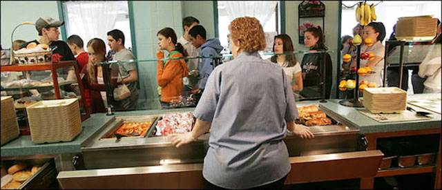

2017-06-20 08:00

You remember it sliding off your lunch tray. They said it was a Sloppy Joe but it could have just as easily been the dead raccoon you saw from the school bus window that morning. Sometimes there was a drumstick shaped thing that might have once been attached to a species of fowl, but it was confusing because there were also pieces of ham and beef gristle attached like Frankenstein’s forehead.
I’m talking about Mystery Meat.
But I’m also talking about the GOP’s new healthcare plan, the AHCA. Trumpcare. Because in both cases nobody really knows for sure what’s in the unsavory concoction.
Mitch McConnell seems intent on forcing a vote on the AHCA by June 30th, though there is still no written draft to examine.
No Democrats have been invited to discuss the bill’s provisions. The Congressional Budget Office has had no opportunity to score the legislation. There will be no committee hearings, and no public input will be allowed. No one has any idea what’s in the GOP’s vat of salmonella and they are deeply shamed by the AHCA. They fear letting the public know how bad it really is.
Like a magician’s trick, this secret bill will be unveiled just moments before a vote. More secret even than the Patriot Act, Congress will be caught totally off guard, will have no time to study it or get feedback from constituents. The Senate majority intends to force this noxious sludge down Americans’ throats by using a process called “reconciliation” – allowing the AHCA (Trumpcare) to be passed by 51 votes instead of the customary 60.
But with grit, testicles (and ovaries), Democrats could slow down the adoption of this gurgling, sulphurous roadkill stew by using Senate rules to object to “unanimous consent” requests, also proposing and arguing for a stream of amendments to the bill. Senate Minority Leader Chuck Schumer has indicated his willingness to pursue this tougher strategy to press for scrutiny of the legislation:
“Republicans are drafting this bill in secret because they’re ashamed of it, plain and simple. These are merely the first steps we’re prepared to take in order to shine a light on this shameful Trumpcare bill and reveal to the public the GOP’s true intentions: to give the uber-wealthy a tax break while making middle class Americans pay more for less health care coverage. If Republicans won’t relent and debate their health care bill in the open for the American people to see, then they shouldn’t expect business as usual in the Senate.”
And I hope he means it. Please call your senators and tell them to stay strong, have another coffee, and argue into the wee hours to fight this heinous attempt to betray the public.
Americans deserve to know exactly what’s in the mystery meat they’re being told they have to swallow.